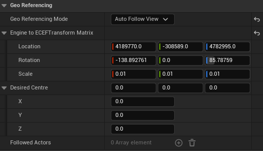
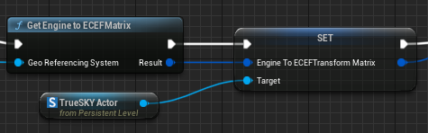
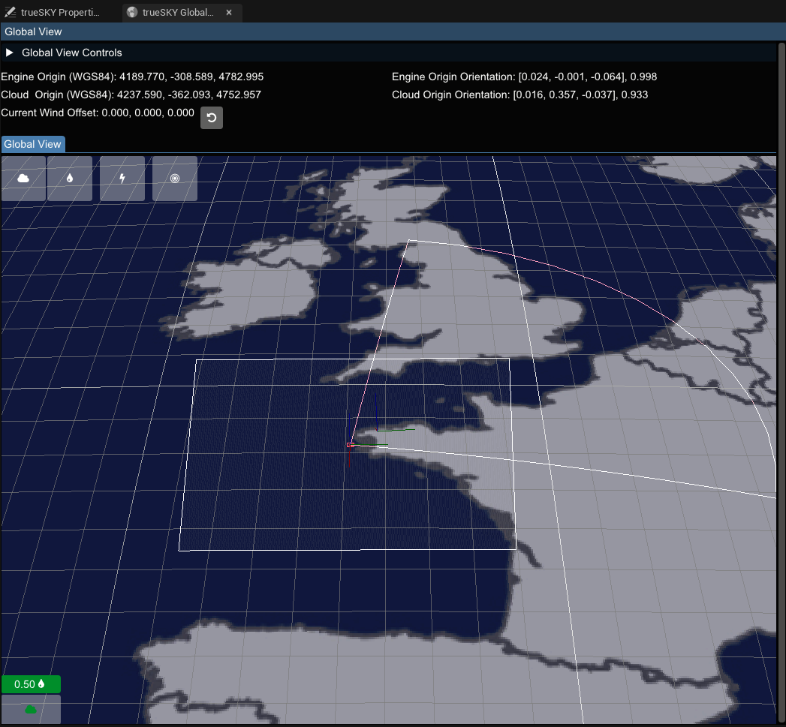

Unreal Engine Geo Referencing¶
To control the position and updating of the Cloud Window in Unreal Engine, open the Geo Referencing section in the trueSKY Actor.

Under Geo Referencing Mode, there are four modes:
None: The Cloud Window centre is same as the WGS84 Engine centre and is continually updated.
GeoReferenced: The Cloud Window centre will be updated by trueSKY based on the Desired Centre and the position of the WGS84 Engine Centre, both of which can be set manually or programmatically via C++ or Blueprint.
AutoFollowActors: Similar to GeoReferenced, but Desired Centre is set to be the average position of multiple actors, which are set in the Followed Actors array.
AutoFollowView: Similar to GeoReferenced, but Desired Centre is set to be position of the view that is passed to trueSKY.
The Engine to ECEF Transform Matrix will need to be set either in C++ or via Blueprints. The required matrix can be obtained from the function Get Engine To ECEF Matrix in the TrueSkyGeoReferencing Blueprint function library.

In the Window menu, select “trueSKY Global View” to activate a panel that shows the positions of the Engine centre and Cloud Window on a map of the Earth.
